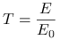

Calculate transmittance / reflectance instead of absolute quantities. That is, set the extraterrestrial irradiance to 1 and do not correct for Sun-Earth distance:
|  | (1) |
where  is the irradiance / actinic flux / radiance and
is the irradiance / actinic flux / radiance and  is the extraterrestrial flux.
Please note the difference to reflectivity.
is the extraterrestrial flux.
Please note the difference to reflectivity.